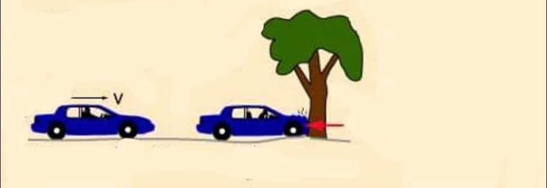
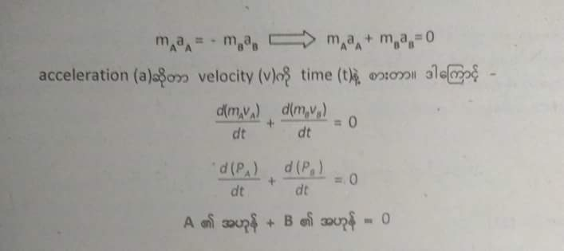

တစ္နာရီ ၁၀ မိုင္ႏႈန္းနဲ႔လာတဲ့ စက္ဘီးတစ္ဘီး သစ္ပင္ကို ဝင္တိုက္တာနဲ႔ တစ္နာရီ ၁၀ မိုင္ႏႈန္းနဲ႔ ေမာင္းလာတဲ့ ကားတစ္စီး သစ္ပင္ဝင္တုိက္တာ၊ ဘယ္သူက အားပိုျပင္းမလဲ။ တစ္နာရီ ၁၀ မိုင္ႏႈန္းနဲ႔ ေမာင္းလာတဲ့ ကားအေသးေလးနဲ႔ တစ္နာရီ ၁၀ မိုင္ႏႈန္းနဲ႔ေမာင္းလာတဲ့ ကုန္တင္ကားဆိုရင္ေရာ၊ ဘယ္သူက တိုက္အားပိုျပင္းမလဲ။ အေျဖကို မင္းတုိ႔လည္း ရိပ္မိမွာပါ။ စက္ဘီးနဲ႔ ကားဆို ကားက တိုက္အားပိုျပင္းမယ္။ ကားအေသးနဲ႔ ကုန္တင္ကားႀကီးဆို ကုန္တင္ကားက ပိုအားျပင္းမယ္။ Why? ဘာျဖစ္လို႔လဲ။ အရြယ္အစားကြာလို႔ေပါ့။ ဒါဆို ေနာက္တစ္မ်ိဳး စဥ္းစားၾကည့္ရေအာင္။ တစ္နာရီ ၁၀ မိုင္ႏႈန္းနဲ႔ ေမာင္းလာတဲ့ ကုန္တင္ကားႀကီးနဲ႔ တစ္နာရီ မိုင္ ၄၀ ႏႈန္းနဲ႔ ကုန္တင္ကားဆိုရင္ေရာ .. အေျဖက ဘယ္လိုျဖစ္သြားမလဲ။ အရြယ္အစားအတူတူျဖစ္ေပမယ့္ မိုင္ ၄၀ ႏႈန္းနဲ႔ေမာင္းလာတဲ့ ကားက ဝင္တုိက္ရင္ 'အုန္းခနဲ' ေနမွာပဲ။ ဟုတ္လား။ အဲဒီျဖစ္လာမယ့္ အားအ႐ွိန္ကို အဟုန္(momentum)လို႔ေခၚတယ္။
ဒါဆို ျဖစ္လာမယ့္ အဟုန္ဆိုတာ အရြယ္အစားေပၚမွာလည္း မူတည္တယ္။ သူလာတဲ့အျမန္ႏႈန္းေပၚမွာလည္း မူတည္တယ္ဆိုတာ ထင္႐ွားၿပီ။ အျမန္ႏႈန္းတူရင္ အရြယ္အစားႀကီးတဲ့ေကာင္က အဟုန္မိုမ်ားမယ္။ အရြယ္အစားတူရင္အျမန္ႏႈန္းမ်ားတဲ့ေကာင္က အဟုန္ပိုမ်ားမယ္ ..ဟုတ္လား။ တိတိက်က်ေျပာရရင္ အရြယ္အစားဆိုတာ ျဒပ္ထု(mass)ကိုေျပာတာ၊ အျမန္ႏႈန္းဆိုတာ အလ်င္ (velocity)ကိုေျပာတာ။ ဆိုေတာ့ အဟုန္ဆိုတာ mass နဲ႔ velocity ေပၚမွာ တိုက္႐ိုက္အခ်ိဴးက်တယ္ေပါ့။ အဟုန္ကို P လို႔ သေကၤတျပဳမယ္ဆိုရင္ -
p = m v

ဘာလို႔ အျမန္ႏႈန္း(speed)ကို မသံုးဘဲ အလ်င္ (velocity)ကို သံုးရတာလဲဆိုေတာ့ အဟုန္က vector matter ျဖစ္ေနလို႔ပဲ။
သူ႔မွာ သီးသန္႔ယူနစ္မ႐ွိဘူး။ mass နဲ႔ velocity တို႔ရဲ႕ ယူနစ္ေတြကိုပဲ ျပန္သံုးတယ္။ ဒါေၾကာင့္ momentum ရဲ႕ယူနစ္က SI unit မွာ kg ms
-1 ျဖစ္တယ္။
အဟုန္ကို နားလည္ရင္ ေနာက္တစ္ဆင့္တက္ၾကည့္ရေအာင္။ နယူတန္ရဲ႕တတိယနိယာမကို မွတ္မိေသးတယ္မွတ္လား။ (မမွတ္မိရင္ ေလ့လာရန္) ။သက္ေရာက္အားအတြက္ တန္ျပန္သက္ေရာက္အား ႐ွိတယ္ဆိုတာေလ။ဥပမာ အရာဝတၳဳ A နဲ႔ B ၾကားမွာ ျဒပ္ဆြဲအား 10N ျဖစ္လာတယ္ဆိုပါေတာ့။ အဓိပၸါယ္က A က B ကို 10N အားနဲ႔လွမ္းဆြဲတာျဖစ္သလို B က A ကို 10N အားနဲ႔ ျပန္ဆြဲေနတာ။ သခ်ာၤလိုဆိုရင္ F AB ကလည္း 10N၊ FBA ကလည္း 10N ေပါ့။ ဒါေပမယ့္ direction ကေတာ့ ကြာမယ္။ တစ္ခုက အေနာက္ဆို တစ္ခုက အေ႐ွ႕ျဖစ္မယ္။ဒါေၾကာင့္ သခ်ာၤလိုညီမ်ွျခင္း ခ်ေရးမယ္ဆိုရင္ -
FAB = - FBA

A ရဲ႕အဟုန္နဲ႔ B ရဲ႕အဟုန္နဲ႔ ေပါင္းရင္ သုညတဲ့။ အဓိပၸါယ္က သူတုိ႔ႏွစ္ခုရဲ႕အဟုန္ေပါင္းလဒ္ဟာ ကိန္းေသျဖစ္ေနတယ္၊မေျပာင္းဘူးေပါ့။ တစ္နည္းအားျဖင့္ တည္ျမဲတယ္။ ဒီအခ်က္ကို ခ်ဲ့ၿပီးစဥ္းစားၾကည့္ရင္ တစ္ခုရဲ႕အဟုန္က တိုးသြားမယ္ဆိုရင္ ..ေသခ်ာတယ္၊ ဒုတိယေကာင္ရဲ႕အဟုန္က ေလ်ာ့သြားရမယ္။ အဲဒီတိုးသြားတဲ့အဟုန္နဲ႔ ေလ်ာ့သြားတဲ့အဟုန္က အတူတူပဲျဖစ္ရမယ္။ ဆိုပါစို႔... တစ္ခုက အဟုန္ ၁၀ ဖိုးတိုးသြားရင္ ေနာက္တစ္ခုက ၁၀ဖိုး ေလ်ာ့သြားရမယ္။ ဒါေပမယ့္ တစ္ခုေတာ့႐ွိတယ္၊ ေဘးက ဘာအေႏွာင့္အယွက္မွ မပါရဘူး။ တိတိက်က်ေျပာရရင္ေတာ့ စနစ္တစ္ခုအတြင္းမွာ႐ွိတဲ့ အရာဝတၳဳေတြရဲ႕ အဟုန္ဟာ (ျပင္ပအေႏွာင့္အယွက္မ႐ွိသေရြ႔) တည္ျမဲတယ္။ အဲဒါ အဟုန္တည္ျမဲျခင္းနိယာမ (law of conservation of momentum)ပဲ။
အရာဝတၳဳႏွစ္ခုပါဝင္ေသာ အဖြဲ႔အစည္းတစ္ခုေပၚ ျပင္ပအသားတင္အား သက္ေရာက္ျခင္းမ႐ွိပါက ထိုအရာဝတၱဳႏွစ္ခု၏ စုစုေပါင္းအဟုန္သည္ ျမဲ၏ (ကိန္းေသျဖစ္၏)။
၉-တန္းမွာေတာ့ အရာဝတၳဳ ႏွစ္ခုလို႔ပဲ ေျပာထားတယ္။ (ဒါေပမယ့္ အမွန္က ႏွစ္ခုရယ္မဟုတ္ဘူး၊ စနစ္တစ္ခုအတြင္းမွာ႐ွိသမ်ွ အရာဝတၳဳေတြအားလံုးရဲ႕ စုစုေပါင္းအဟုန္က တည္ျမဲတယ္)
ဥပမာ ေဂၚလီလံုး A ကေရြ႔ေနတယ္။ သူရဲ႕အဟုန္က 10 ႐ွိတယ္။ ေဂၚလီလံုး B ကလည္း ေရြ႔ေနတယ္။ အဟုန္ 20 ႐ွိတယ္။ ဒီေကာင္ေတြ ဝင္တိုက္မိမယ္။ ၿပီးရင္ လြင့္ထြက္သြားမယ္။ အဲ့ဒီအခါမွာ သူတုိ႔ရဲ႕ အလ်င္ေတြက ေျပာင္းသြားမွာပဲ။ ေစာေစာကနဲ႔ေတာ့ ဘယ္တူေတာ့မလဲ .. ဟုတ္လား။ အလ်င္ေတြ ဘယ္လိုပဲ ေျပာင္းေျပာင္း၊ အဲ့ဒီေကာင္ေတြရဲ႕အဟုန္ေပါင္းလဒ္က အတူတူပဲ ျဖစ္ေနရမယ္။ ဝင္မတုိက္ခင္တုန္းက စုစုေပါင္း အဟုန္က 30 ႐ွိရင္ ဝင္တုိက္ၿပီးသြားရင္လည္း စုစုေပါင္းအဟုန္က 30 ပဲျဖစ္ရမယ္။ မတုိးရဘူး၊ မေလ်ာ့ရဘူး။
႐ူပေဗဒ မွာ အဲ့လိုတည္ျမဲျခင္းနိယာမေတြဟာ အရမ္းအေရးႀကီးၿပီး အရမ္းလည္း စြမ္းတဲ့နိယာမေတြ ျဖစ္တယ္။ ထင္႐ွားတဲ့ တည္ျမဲျခင္းနိယာမေတြက စြမ္းအင္-ျဒပ္ထု တည္ျမဲျခင္းနိယာမ၊ လ်ွပ္စစ္တည္ျမဲျခင္း နိယာမေတြပဲ။ တည္ျမဲျခင္းနိယာမေတြက ဘာလို႔အေရးႀကီးၿပီး စြမ္းရသလဲဆိုေတာ့ ကိန္းေသတန္ဖိုးတစ္ခုကို သိေနလို႔ပဲ။ဥပမာ အဟုန္တည္ျမဲျခင္း နိယာမဆိုပါစို႔။ အထက္ကဥပမာမွာ ေျပာခဲ့သလိုပဲ .. တန္ဖိုးမေျပာင္းဘူးဆိုတာ သိေနေတာ့ A ရဲ႕ အလ်င္ကိုသာ သိထားမယ္ဆိုရင္ B ရဲ႕ အလ်င္ကိုလည္း ေသခ်ာေပါက္သိၿပီ။ ဒီထက္ပိုေျပာရရင္ system တစ္ခုမွာ တစ္ခုခုကို သိခဲ့ရင္ တစ္ခုလံုးကို သိႏုိင္တယ္။